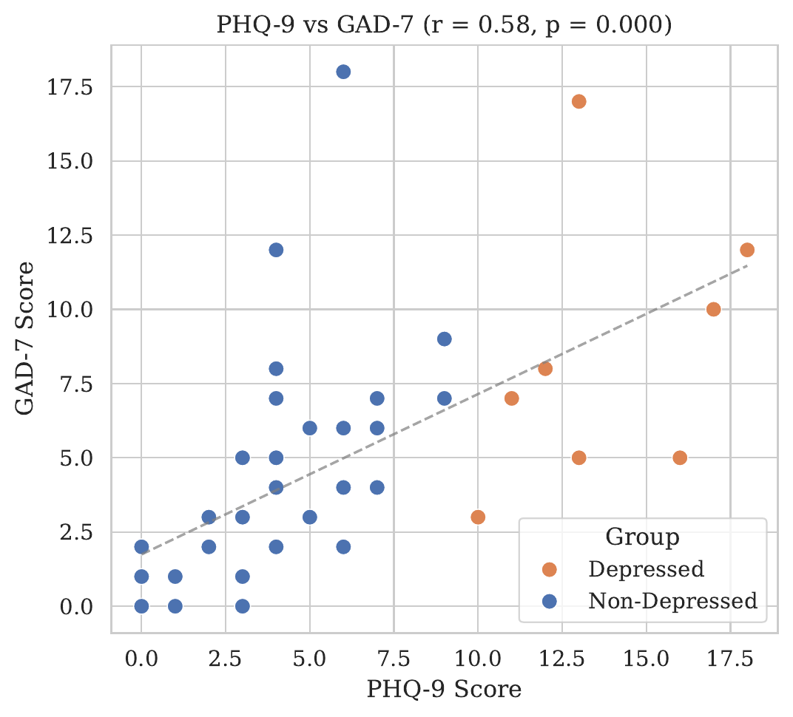
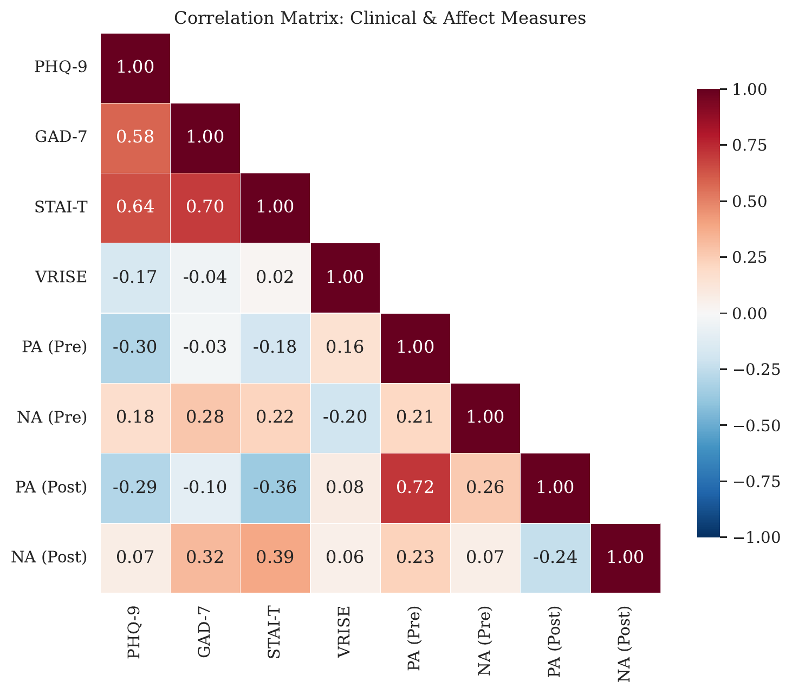
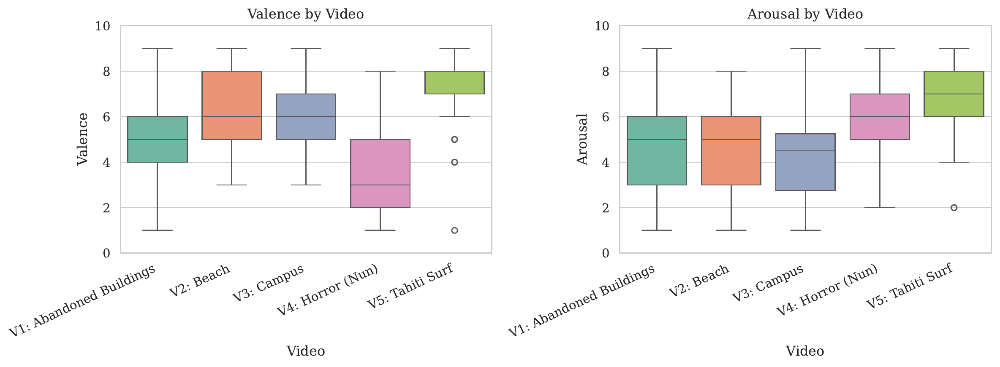
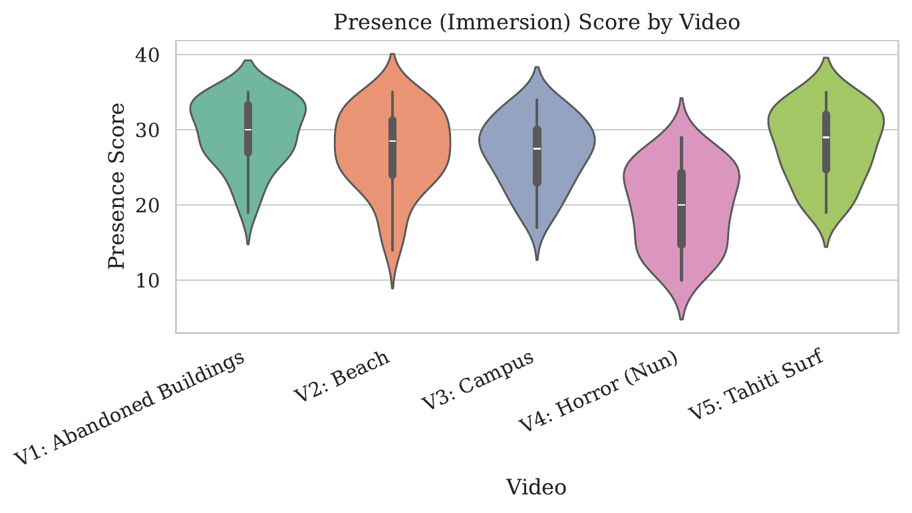

Are Headtracking Measures an Indicator of Depressive Symptoms?
Preliminary Data Visualization, Descriptive Statistics, and Inferential Analysis
Report 1 — BRSM Course Project
Parv Shah (2025201093) | Hardik (2025201046) | Gaurav (2025201065)
February 2026
Background & Motivation
- Depression is a leading cause of disability worldwide, yet objective behavioral markers remain limited
- Psychomotor retardation — the clinically observed slowing of physical movement — is a hallmark symptom (PHQ-9 Item 8)
- If depressed individuals move more slowly, this should manifest as reduced head rotation in immersive VR environments
- Srivastava et al. (2025) found that scanning speed in 360° VR videos was significantly lower in the moderate-severe depression group (p < .001, η² = .295)
This study: A replication using a Meta Quest 3 headset with N = 40 Indian college students viewing five 360° videos.
Research Question
Can headtracking measures (rotation speed, angular range) during 360° VR video viewing distinguish individuals with depressive symptoms from those without?
Methods Overview
Measures
- PHQ-9 — Depression (0–27)
- GAD-7 — Anxiety (0–21)
- STAI-T — Trait Anxiety (20–80)
- PANAS-SF — Mood (Pre & Post VR)
- VRNQ-VRISE — Simulator Sickness
- Valence, Arousal, Presence per video
Five Videos
- V1: Abandoned Buildings (60s)
- V2: Beach (60s)
- V3: Campus (60s)
- V4: Horror — The Nun (~3 min)
- V5: Tahiti Surf (~3 min)
Depression Classification
PHQ-9 Cutoff: ≥ 10
- Standard clinical threshold for moderate depression (Kroenke et al., 2001)
- Sensitivity 88%, Specificity 88% for MDD
- Same threshold used by Srivastava et al. (2025)
Key limitation: Unbalanced groups (20% vs 80%) — limits statistical power.
Statistical Approach
| Test | Purpose | Why This Test? |
|---|
| Shapiro-Wilk | Normality check | Tests distributional assumptions |
| Pearson r | Correlations | Bivariate linear association |
| Welch's t-test | Group comparisons (Dep vs Non-Dep) | Independent-samples; no equal-variance assumption |
| Paired t-test | Pre-Post PANAS | Within-subject comparison |
| Cohen's d | Effect sizes | Quantifies practical significance |
| Bonferroni | Multiple comparisons | αcorrected = .05/25 = .002 |
| IQR / z-score | Outlier detection | Clinical scores (IQR) vs headtracking (|z| > 3) |
Why parametric despite non-normality? t-tests are robust to moderate non-normality (CLT). With N = 40, Welch's correction handles unequal variances.
Demographics
| Variable | Value |
|---|
| N | 40 |
| Gender | 36 M (90%), 4 F (10%) |
| Age M (SD) | 22.8 (1.8) |
| Age Range | 19 – 27 |
| Prior VR Experience | 16 (40%) |
Clinical Measure Distributions
Dashed red line on PHQ-9 = cutoff ≥ 10 for moderate depression. Both PHQ-9 and GAD-7 are positively skewed (non-normal).
Depression–Anxiety Covariance


PHQ-9 & GAD-7: Pearson r = .579 (p < .001) |
PHQ-9 & STAI-T: Pearson r = .642 (p < .001)
→ Depression and anxiety are strongly correlated. Must account for this in Report 2 (ANCOVA).
Video Emotional Profiles
| Video | Valence M (SD) | Arousal M (SD) | Presence M (SD) |
|---|
| V1: Abandoned Buildings | 5.20 (1.67) | 4.60 (2.22) | 29.60 (4.41) |
| V2: Beach | 6.53 (1.75) | 4.65 (2.03) | 27.25 (5.31) |
| V3: Campus | 6.15 (1.61) | 4.33 (2.16) | 26.95 (4.52) |
| V4: Horror (Nun) | 3.67 (1.85) | 5.95 (1.68) | 19.85 (5.44) |
| V5: Tahiti Surf | 7.12 (1.68) | 6.50 (1.69) | 28.02 (4.79) |


Headtracking: Speed Across Videos
V1 (Abandoned) highest mean speed (39.08°/s) | V4 (Horror) lowest (24.17°/s) — video content appears to drive exploration.
Formal one-way ANOVA testing deferred to Report 2.
Headtracking by Depression Group
Welch's t-tests (5 videos × 5 measures = 25 tests)
| Video | Mean Speed (Total) | Total Angular Range |
|---|
| t | p | d | t | p | d |
|---|
| V1: Abandoned | −0.24 | .816 | −0.08 | −0.22 | .831 | −0.07 |
| V2: Beach | 1.22 | .239 | 0.38 | 1.76 | .104 | 0.65 |
| V3: Campus | −0.64 | .532 | −0.24 | 0.16 | .878 | 0.05 |
| V4: Horror | 1.07 | .303 | 0.37 | 2.21 | .048 | 0.83 |
| V5: Tahiti Surf | −0.66 | .523 | −0.21 | −0.36 | .727 | −0.16 |
Key finding: No significant group differences after Bonferroni correction (αcorrected = .002). V4 angular range (p = .048, d = 0.83) is uncorrected-significant but in the opposite direction — likely a Type I error.
PHQ-9 vs Headtracking Correlations
Near-Zero Correlations (Pearson)
| Measure | r | p |
|---|
| Mean Total Speed | −.060 | .712 |
| Mean Yaw Speed | −.081 | .617 |
| SD of Total Speed | −.158 | .329 |
Depression severity (as a continuous score) is not correlated with any headtracking summary measure at the participant level.
Angular Range by Group
Total angular range explored per video by depression group. Error bars = 95% CI. Only V4 shows a significant difference — and in the opposite direction to the psychomotor retardation hypothesis.
PANAS: Pre- & Post-VR Mood
Paired t-tests
| Scale | Pre | Post | t(39) | p | d |
|---|
| Positive Affect | 34.52 | 32.15 | 2.09 | .043* | −0.33 |
| Negative Affect | 12.70 | 13.95 | −1.06 | .294 | 0.17 |
Positive Affect decreased significantly after VR. This could reflect: the lingering mood impact of the horror video, general fatigue, or VR-induced discomfort.
Outlier Analysis
| Method | Variable | Outliers Found | Action |
|---|
| IQR (1.5×) | PHQ-9 | 3 (scores > 14.2) | Retained — genuine clinical variability |
| IQR (1.5×) | GAD-7 | 2 (scores > 14.5) | Retained — genuine clinical variability |
| |z| > 3 | Headtracking Speed | 0 | No extreme values |
| Inspection | VRISE | 1 (low score = 17) | Flagged for sensitivity analysis |
All outliers represent genuine variability, not data errors. No participants were excluded from analysis.
Summary of Findings
- Sample is predominantly non-clinical: 80% below moderate depression threshold
- Depression & anxiety strongly correlated (Pearson r = .58) → must control for anxiety in Report 2
- Videos elicited distinct emotional profiles; headtracking speed varies across videos (formal ANOVA deferred to Report 2)
- No significant differences in mean headtracking speed between depression groups (Bonferroni α = .002)
- V4 angular range (p = .048, d = 0.83) is opposite to prediction — non-significant after Bonferroni
- Positive Affect decreased significantly after VR (paired t, p = .043, d = −0.33)
Bottom line: The original study's finding of reduced scanning speed in depression (Srivastava et al., 2025) was not replicated in this preliminary analysis.
Why Didn't We Replicate?
- Insufficient statistical power: Only n = 8 in depressed group (vs n = 32). Original had N = 50 with 40% moderate-severe
- Binary vs. 3-group classification: Original used minimal / mild / moderate-severe; we collapsed to 2 groups
- No anxiety covariate: Original used ANCOVA controlling for GAD-7 and STAI-T; we used simple Welch's t-tests
- Different equipment: Meta Quest 3 vs HTC Vive Pro (90 Hz)
- Different severity distribution: Our sample is mostly minimal-mild; their sample had 40% moderate-severe
Plans for Report 2
- Compare multiple comparison corrections (Bonferroni / Holm / Benjamini-Hochberg)
- Use PHQ-9 as continuous predictor in regression/GLM
- ANCOVA with GAD-7 and STAI-T as covariates — matching the original study's approach
- Repeated-measures / mixed-effects models accounting for within-subject structure across 5 videos
- Video-type interactions: Do emotional contexts moderate the depression–headtracking relationship?
- Mediation/moderation analysis with presence and simulator sickness
- Effect size estimation & power analysis given the small sample
References
- Srivastava, P., Lahane, R., Vivek, R., & Pulapa, P. (2025). What Do Head Scans Reveal About Depression? Insights from 360° Psychomotor Assessment. Proceedings of the Annual Meeting of the Cognitive Science Society, 47(0).
- Bennabi, D., et al. (2013). Psychomotor retardation in depression: A systematic review. BioMed Research International, 2013.
- Kalin, N. H. (2020). The Critical Relationship Between Anxiety and Depression. American Journal of Psychiatry, 177(5), 365–367.
- Kourtesis, P., Collina, S., Doumas, L. A. A., & MacPherson, S. E. (2019). Validation of the Virtual Reality Neuroscience Questionnaire. Frontiers in Human Neuroscience, 13, 417.
- Kroenke, K., Spitzer, R. L., & Williams, J. B. (2001). The PHQ-9: Validity of a brief depression severity measure. Journal of General Internal Medicine, 16(9), 606–613.
- Spitzer, R. L., Kroenke, K., Williams, J. B. W., & Löwe, B. (2006). A brief measure for assessing generalized anxiety disorder: The GAD-7. Archives of Internal Medicine, 166(10), 1092–1097.
- Spielberger, C. D., Gorsuch, R. L., Lushene, R., Vagg, P. R., & Jacobs, G. A. (1983). Manual for the State-Trait Anxiety Inventory. Consulting Psychologists Press.
- Watson, D., Clark, L. A., & Tellegen, A. (1988). Development and validation of brief measures of positive and negative affect: The PANAS scales. Journal of Personality and Social Psychology, 54(6), 1063–1070.